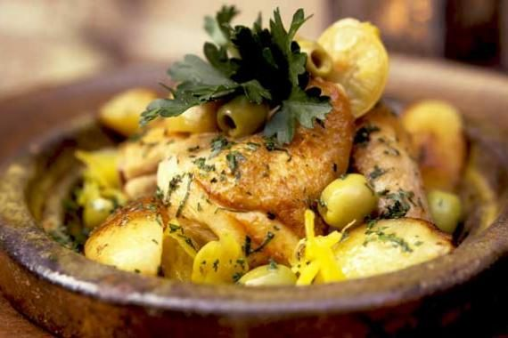

Chicken tagine

Description:
Tagine is a classic North African stew made with meats and vegetables braised in a gently spiced sauce.
There are many varieties of tagines. Meat, fish and all manner of vegetables can make their way into this stew.
However,chicken-tagine is considered one of the best types of tagines ever, and you probably don't want to miss this one. So what are we waiting for! let's make one!
Ingredients:
- Bone-in skin-on chicken thighs
- Ras el hanout
- Cinnamon stick
- Dried apricots
- Chickpeas
- Garlic and onion
- Canned tomato
- Chicken stock
- Coriander / cilantro
- Preserved lemon
Steps:
- Cover the dried apricots with boiling water then leave for 30 minutes to plump up.
- Season the chicken with salt and pepper and brown the skin really well in a pan.
- Sauté the onion and garlic, then cook off the spices briefly.
- Add the chickpeas, apricot, tomato, preserved lemon, stock and cinnamon stick. Stir, then bring it to a simmer
- Just place the chicken on top, skin side up.
- Adjust the heat as needed so it's simmering gently
- Remove the lid then simmer uncovered for 20 minutes
- Serving!
Check also:
Moroocan pastilla
Moroccan Zaalouk